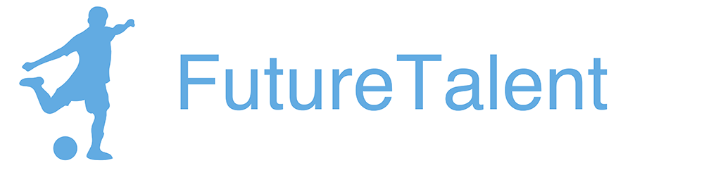
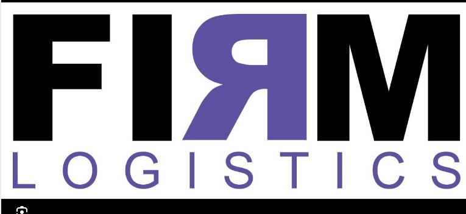
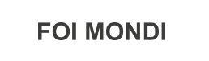
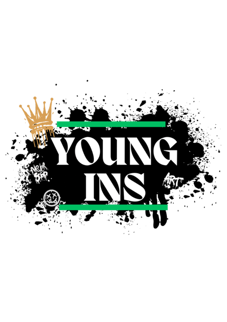
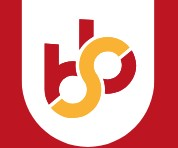
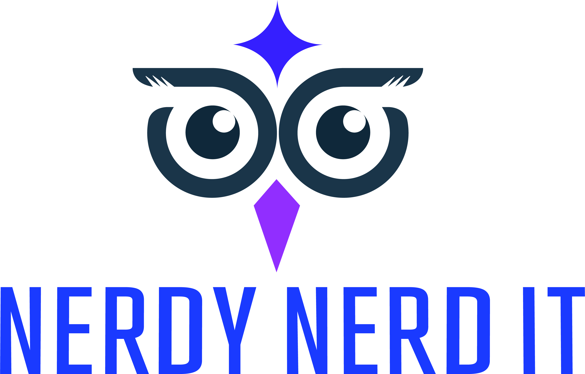
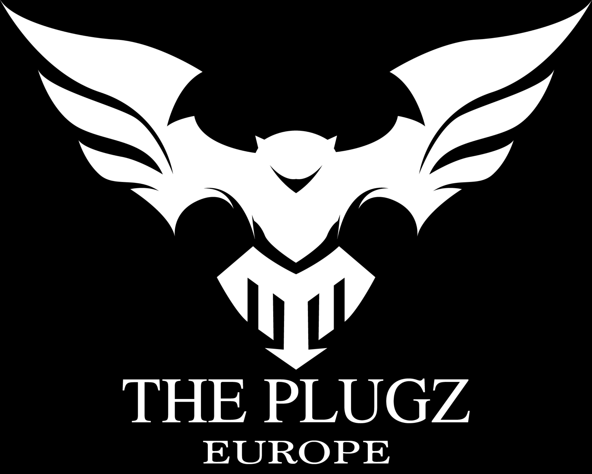
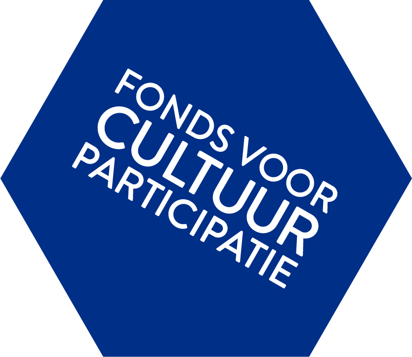

D.C.010 is een belangrijke samenwerkingspartner van Stichting Facts binnen het programma G.O.A.L.S. Vanuit hun expertise in sport, jongerenontwikkeling en organisatie heeft D.C.010 een wezenlijke bijdrage geleverd aan de opzet, uitvoering en doorontwikkeling van het programma in Rotterdam-Zuid.
Binnen de samenwerking ligt de focus op het verbinden van sport, educatie en persoonlijke ontwikkeling, met als doel jongeren te versterken in hun talenten, discipline, zelfvertrouwen en toekomstperspectief. D.C.010 draagt hierbij bij aan zowel de praktische uitvoering als aan de maatschappelijke impact van het programma.
Dankzij deze samenwerking heeft Stichting Facts het programma G.O.A.L.S. duurzaam kunnen verankeren en jongeren op structurele wijze kunnen begeleiden, zowel op als buiten het sportveld.
S.S.A. is een waardevolle samenwerkingspartner van Stichting Facts binnen het programma G.O.A.L.S. in Rotterdam-Zuid. Vanuit hun expertise in talentontwikkeling en jeugdvoetbal draagt S.S.A. bij aan de sportieve en persoonlijke ontwikkeling van jongeren binnen het programma.
Binnen de samenwerking ligt de nadruk op het ontdekken en ontwikkelen van talent, het versterken van discipline, zelfvertrouwen en doorzettingsvermogen, en het bieden van een veilige en stimulerende leeromgeving. Door de combinatie van sport, begeleiding en coaching krijgen jongeren de ruimte om hun potentieel te benutten en te werken aan hun toekomstperspectief.
De samenwerking met S.S.A. versterkt de sportieve pijler van G.O.A.L.S. en draagt bij aan de brede maatschappelijke doelstelling van Stichting Facts: het vergroten van kansen en veerkracht bij jongeren in Rotterdam-Zuid.
Future Talent is een belangrijke samenwerkingspartner van Stichting Facts binnen meerdere programma's, waaronder G.O.A.L.S. Binnen deze samenwerking worden sportieve, educatieve en ontwikkelingsgerichte trajecten aangeboden die jongeren ondersteunen in hun persoonlijke groei, talentontwikkeling en toekomstperspectief.
Door de combinatie van sport, coaching en begeleiding krijgen jongeren de ruimte om hun vaardigheden te ontwikkelen, zelfvertrouwen op te bouwen en te werken aan hun maatschappelijke participatie, zowel op als buiten het sportveld.
De samenwerking met Future Talent versterkt de inhoudelijke kwaliteit en uitvoeringskracht van onze programma's en draagt bij aan de brede maatschappelijke doelstelling van Stichting Facts: het vergroten van kansen, veerkracht en ontwikkelingsmogelijkheden voor jongeren in Rotterdam en omgeving.
Youngins is een belangrijke samenwerkingspartner van Stichting Facts binnen het programma Artletics en toekomstige creatieve en ontwikkelingsgerichte trajecten. Vanuit hun expertise in jongerenontwikkeling, creativiteit en talentbegeleiding draagt Youngins bij aan het versterken van zelfvertrouwen, expressie en persoonlijke groei van jongeren.
Binnen de samenwerking ligt de focus op het combineren van kunst, cultuur, educatie en begeleiding, zodat jongeren op een laagdrempelige manier hun talenten ontdekken, hun identiteit versterken en werken aan hun toekomstperspectief.
De samenwerking met Youngins versterkt de creatieve en educatieve pijler van Stichting Facts en draagt bij aan de brede maatschappelijke doelstelling: het vergroten van kansen, veerkracht en ontwikkelingsmogelijkheden voor jongeren in Rotterdam en omgeving.
The Plugz Europe is een belangrijke samenwerkingspartner van Stichting Facts binnen meerdere culturele en creatieve programma's. Vanuit hun expertise in muziek, media en talentontwikkeling dragen zij bij aan het versterken van creativiteit, zelfvertrouwen en toekomstperspectief van jongeren.
Binnen de samenwerking krijgen jongeren via workshops en creatieve trajecten de kans om hun talenten te ontdekken, hun identiteit te versterken en zich te oriënteren op mogelijkheden binnen de creatieve en digitale sector.
De samenwerking met The Plugz Europe versterkt de culturele en educatieve pijler van Stichting Facts en draagt bij aan het vergroten van kansen, bewustwording en maatschappelijke participatie van jongeren in Rotterdam en omgeving.
Foi Mondi is een creatieve samenwerkingspartner van Stichting Facts binnen programma's op het gebied van mode, design en talentontwikkeling. Vanuit hun inspiratie uit de Caribische cultuur en hedendaagse stedelijke trends draagt Foi Mondi bij aan het versterken van creativiteit, identiteit en ondernemerschap bij jongeren.
Binnen de samenwerking krijgen jongeren de kans om kennis te maken met verschillende aspecten van mode en design, hun talenten te ontdekken en zich te oriënteren op mogelijke toekomstpaden binnen de creatieve sector. Daarbij staat persoonlijke ontwikkeling, zelfvertrouwen en het maken van bewuste carrièrekeuzes centraal.
De samenwerking met Foi Mondi versterkt de creatieve en educatieve pijler van Stichting Facts en draagt bij aan het vergroten van kansen en toekomstperspectief voor jongeren.

Firm Logistics is een maatschappelijk betrokken samenwerkingspartner van Stichting Facts binnen meerdere programma's. Vanuit hun visie op maatschappelijk verantwoord ondernemen dragen zij bij aan het versterken van kansen, gelijkheid en zelfvertrouwen bij jongeren.
Door deze samenwerking ontvangen deelnemers van o.a. G.O.A.L.S. sporttenues en trainingskleding, waarmee zij op een gelijkwaardige en professionele manier kunnen deelnemen aan het programma. Dit bevordert niet alleen teamgevoel en herkenning, maar versterkt ook het zelfbeeld, de motivatie en het gevoel van waardering bij jongeren.
De samenwerking met Firm Logistics draagt bij aan een veilige, inclusieve en stimulerende leeromgeving waarin jongeren zich kunnen ontwikkelen en werken aan hun toekomstperspectief.